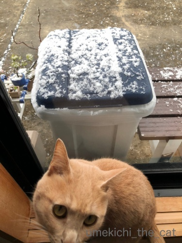
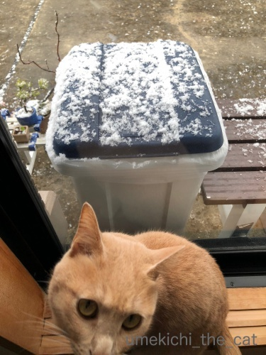
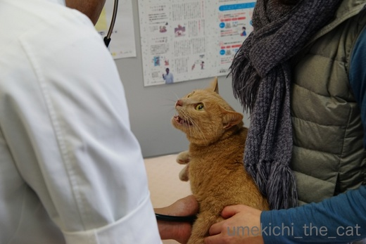
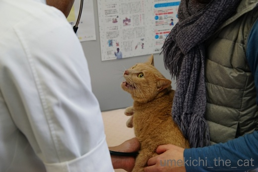
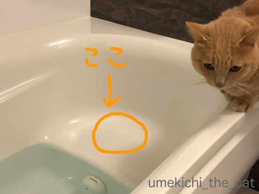
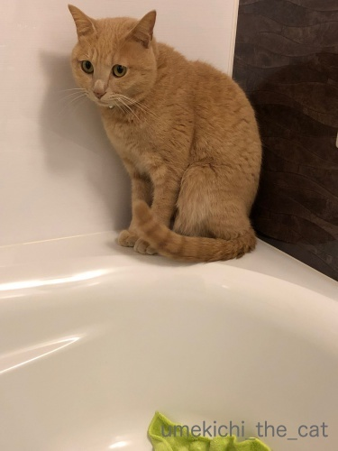
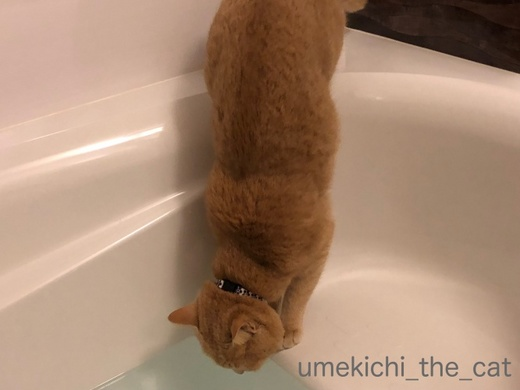
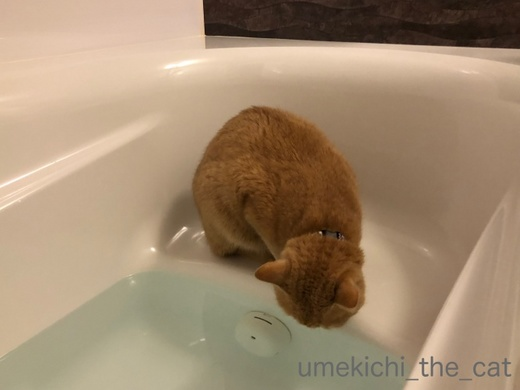
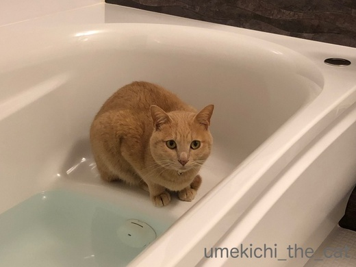

雪を見たかい？ [梅吉]
先週26日金曜日、ほんの30分ほどですが我が家付近では
隣のお家もはっきり見えないくらいの雪が降りました。
大阪に住んで６年、こんなに吹雪いたのは初めてです。

大阪生まれの梅吉。初めて見る吹雪に興味津々。
22秒の動画です。

![[猫]](https://blog.ss-blog.jp/_images_e/101.gif) おかーさん あのしろいのは なんやー！！
おかーさん あのしろいのは なんやー！！

そんなに伸びる程雪に興味が？と思ったらすずめが来ていたようです。
この窓の外に梅吉のネコ草の鉢がいくつかあるのですが
そのタネを狙ってすずめが集まっていたのです。
この時期食べるものがなくて苦労しているんでしょうね・・・
だからと言ってネコ草のタネを掘り返すのはやめてー！！
（寒いのでなかなか発芽しなくて苦労しているんですw）
鳩が集まるようになったのでしばらく中断していたお米のお振る舞い
すずめのために時々することにしましたよ。
初めは二羽だったのが増えている・・・
そして今朝はまた倍に(^▽^;)
すずめの情報伝達能力ってすごいです！
 ↑ガブッと一押し↑
↑ガブッと一押し↑
隣のお家もはっきり見えないくらいの雪が降りました。
大阪に住んで６年、こんなに吹雪いたのは初めてです。

大阪生まれの梅吉。初めて見る吹雪に興味津々。
22秒の動画です。


そんなに伸びる程雪に興味が？と思ったらすずめが来ていたようです。
この窓の外に梅吉のネコ草の鉢がいくつかあるのですが
そのタネを狙ってすずめが集まっていたのです。
この時期食べるものがなくて苦労しているんでしょうね・・・
だからと言ってネコ草のタネを掘り返すのはやめてー！！
（寒いのでなかなか発芽しなくて苦労しているんですw）
鳩が集まるようになったのでしばらく中断していたお米のお振る舞い
すずめのために時々することにしましたよ。
初めは二羽だったのが増えている・・・
そして今朝はまた倍に(^▽^;)
すずめの情報伝達能力ってすごいです！
ピントが合っているのは・・・ [梅吉]


お布団から出るのがつらい朝 [梅吉]
･゜ﾟ･昨日nice！カウンターが「8888」に。踏んだのはpalpalさん！！おめでとー！！！･゜ﾟ･
梅吉からありがとうガブをー！
お休みの日、二度寝をするとなかなかリビングにやってこない梅吉さん。
様子を見に行くと・・・
おててが見えてますよーＯ(≧▽≦)Ｏ
ああ、顔を見なくてもダメになっているのが分かりますw
ちょっとー、起きないんですか？

実力行使。
抱きかかえようとするとシーツをぎゅーーーっと掴んで抵抗。
もちろん無駄な抵抗です。
暖かいリビングにのそのそ歩いて行ったなぁと思っていると
こんなことになっていました(^▽^;)
また寒さが戻ってきましたね。
梅吉じゃなくても朝布団から出るのに気合が入ります。
関東の降雪にはちょっとびっくり。思いっきり積もりましたねー！
しかも湿った重い雪。雪かきをする方はご苦労様です。
（この時期の北海道の雪は寒いのでめっちゃ軽い）
腕だけでやってはいけません。腰を入れてするんですよー＾＾
ただし度がすぎると腰を痛めるのでご注意をm(_ _)m
↑ガブッと一押し↑
梅吉からありがとうガブをー！
お休みの日、二度寝をするとなかなかリビングにやってこない梅吉さん。
様子を見に行くと・・・
おててが見えてますよーＯ(≧▽≦)Ｏ
ああ、顔を見なくてもダメになっているのが分かりますw
ちょっとー、起きないんですか？

実力行使。
抱きかかえようとするとシーツをぎゅーーーっと掴んで抵抗。
もちろん無駄な抵抗です。
暖かいリビングにのそのそ歩いて行ったなぁと思っていると
こんなことになっていました(^▽^;)
また寒さが戻ってきましたね。
梅吉じゃなくても朝布団から出るのに気合が入ります。
関東の降雪にはちょっとびっくり。思いっきり積もりましたねー！
しかも湿った重い雪。雪かきをする方はご苦労様です。
（この時期の北海道の雪は寒いのでめっちゃ軽い）
腕だけでやってはいけません。腰を入れてするんですよー＾＾
ただし度がすぎると腰を痛めるのでご注意をm(_ _)m
お薬生活3ヶ月 [梅吉]
今日は梅吉の病院の日でした。
あいも変わらずキャリーを出すといそいそと入る梅吉さん (⌒_⌒;
お薬を飲み始めてから3ヶ月。
採血をしてお薬の効果をチェックします。
今回は朝食OKだったのでずいぶん気が楽でしたよー。
お腹を触診。

ちょっとー さわらんといてやー![[むかっ（怒り）]](https://blog.ss-blog.jp/_images_e/152.gif)
はい、お約束の「シャーーーーーッ」！
採血のため処置室へ。
「シャーーーーーッ」といいながらも暴れることもなく
先生に連れ去られて行きます(^▽^;)
今回の採決結果。
中性脂肪値は変わらず基準値越えですが前回よりはずいぶん下がりました。
今梅吉に処方されているお薬はマイルドな作用なのだそうです。
パツンと効くお薬は人間・犬には使えても猫には使えないとのこと。
願わくばもう少し下がっているのを期待したのですが・・・と先生。
ただ、確実に数値は良くなっているし（薬の効果か断言は出来ないのですが）
今まで220くらいだった心拍が160くらいに下がっている。
これはとっても良い兆候。
さらに3ヶ月今のお薬を続けましょう、という事になりました。
次回の採血が今回と同じくらいの値であれば
薬の効果を高める補助薬を処方される事になりそうです。
「フーーーーーーッ！」
「シャーーーーーーッ！！」とお疲れ様でしたね。梅吉さん![[黒ハート]](https://blog.ss-blog.jp/_images_e/136.gif)
頑張ってお薬生活続けようねー＾＾
↑ガブッと一押し↑
あいも変わらずキャリーを出すといそいそと入る梅吉さん (⌒_⌒;
お薬を飲み始めてから3ヶ月。
採血をしてお薬の効果をチェックします。
今回は朝食OKだったのでずいぶん気が楽でしたよー。
お腹を触診。

はい、お約束の「シャーーーーーッ」！
採血のため処置室へ。
「シャーーーーーッ」といいながらも暴れることもなく
先生に連れ去られて行きます(^▽^;)
今回の採決結果。
中性脂肪値は変わらず基準値越えですが前回よりはずいぶん下がりました。
今梅吉に処方されているお薬はマイルドな作用なのだそうです。
パツンと効くお薬は人間・犬には使えても猫には使えないとのこと。
願わくばもう少し下がっているのを期待したのですが・・・と先生。
ただ、確実に数値は良くなっているし（薬の効果か断言は出来ないのですが）
今まで220くらいだった心拍が160くらいに下がっている。
これはとっても良い兆候。
さらに3ヶ月今のお薬を続けましょう、という事になりました。
次回の採血が今回と同じくらいの値であれば
薬の効果を高める補助薬を処方される事になりそうです。
「フーーーーーーッ！」
「シャーーーーーーッ！！」とお疲れ様でしたね。梅吉さん
頑張ってお薬生活続けようねー＾＾
2018-01-20 13:52
nice!(57)
美味しいネコ様用床暖房 [梅吉]
朝、残り湯が減ったバスタブで何かをアピールする梅吉さん。
バスタブに落ちたことなどすっかり忘れている様子。

半身浴用の腰掛スペースに行きたいのです。

はいはい。そこをお拭きすれば良いのですねー。
朝忙しい下僕が拭かせていただきますよ・・・



それはやめてー！！
ちゃんと白湯は用意してあるのにお風呂の残り湯が好き・・・涙
綺麗な白湯を飲んで欲しいのに。
梅吉が飲んじゃうので我が家は入浴剤が使えません。

残り湯を抜いた直後のバスタブはほんわかと温いので気持ちが良いようです。
温くて白湯が飲める、梅吉には二つの良いことができる場所のようですよ(^▽^;)
そしてたった一度だけなのですが前足を残り湯につけて「前脚湯」を楽しんでいたようなのです。
おっとが目撃したのですが肩までじゃぼーんと浸かって
「あー、たまらんわぁ・・・」と目を細めてたんですって！
スマホを構えても時すでに遅し・・・
私も駆けつけましたが見ることはできませんでした〜
以来、梅吉が朝お風呂に向かう度にスマホ片手に粘っているのですがなかなかやってくれません。
来週からまた寒さが戻ってくるようなので暖を求めて「前脚湯」してくれないかなぁ。
フォトブックが届きました [梅吉]
毎年年末にオーダーしてお正月休みにニヤニヤしながら眺める梅吉のフォトブックが先日届きましたー。
昨年内に手元に欲しかったのですが昨年一昨年と利用していたフォトブックのサイトに
なぜか写真がアップロードできなくて・・・
急遽他のフォトブックのサイトを探して使い勝手を確かめて、とかなり焦ったのですが
やっつけ仕事では満足いくのが出来ないわね、とお正月休みにゆっくりと作業しました。
で、今年はこうなりました。

「梅吉やで。」2017年バージョン![[ぴかぴか（新しい）]](https://blog.ss-blog.jp/_images_e/150.gif)

表紙のデザインは変えたくなかったので同じようにデザインしました＾＾
サイズは三回りくらい大きくなったかな。

その分使える写真の枚数も増えていろいろ収めることができました。
レイアウトのテンプレートも豊富でいろんなことができましたよ。
その分お値段も以前使っていたサイトよりも５倍くらいしましたが・・・(⌒_⌒;
でも画質が良い！キレイ！！
裏表紙にこんなことが出来たりしてヾ(*ΦωΦ)ﾉ
大満足の仕上がりでした。
今年もこのサイトで作っちゃおうかな・・・
利用したのはMY BOOKというサイトです。
ちなみに初回割引があったりして2600円くらい。
以前使っていたしまうまプリントは500円くらいで出来たのですが・・・
インスタの写真だと簡単にアップロード出来たのでインスタ写真で作りたい方は良いかも、です。
なぜ私のMacから写真のアップロードが出来ないのかは謎！

梅吉さん、今回の出来はいかがですか？
うむ！
気に入っていただけたようです♡
↑ガブッと一押し↑
昨年内に手元に欲しかったのですが昨年一昨年と利用していたフォトブックのサイトに
なぜか写真がアップロードできなくて・・・
急遽他のフォトブックのサイトを探して使い勝手を確かめて、とかなり焦ったのですが
やっつけ仕事では満足いくのが出来ないわね、とお正月休みにゆっくりと作業しました。
で、今年はこうなりました。

「梅吉やで。」2017年バージョン

表紙のデザインは変えたくなかったので同じようにデザインしました＾＾
サイズは三回りくらい大きくなったかな。

その分使える写真の枚数も増えていろいろ収めることができました。
レイアウトのテンプレートも豊富でいろんなことができましたよ。
その分お値段も以前使っていたサイトよりも５倍くらいしましたが・・・(⌒_⌒;
でも画質が良い！キレイ！！
裏表紙にこんなことが出来たりしてヾ(*ΦωΦ)ﾉ
大満足の仕上がりでした。
今年もこのサイトで作っちゃおうかな・・・
利用したのはMY BOOKというサイトです。
ちなみに初回割引があったりして2600円くらい。
以前使っていたしまうまプリントは500円くらいで出来たのですが・・・
インスタの写真だと簡単にアップロード出来たのでインスタ写真で作りたい方は良いかも、です。
なぜ私のMacから写真のアップロードが出来ないのかは謎！

梅吉さん、今回の出来はいかがですか？
気に入っていただけたようです♡
タグ：フォトブック
今年もえべっさんだよ！ [梅吉]
10日は戎社の例祭「えべっさん」でした。
去年に続いて今年もお参りに行って来ました。
今年はあいにくの雨と風。寒くて手袋を外してスマホ撮影する手がかじかみます。
傘を片手に結構アクロバティックな感じで撮影していたら
どーしょうもない写真しか撮れていなかった・・・
（なのでお外の写真はありません (⌒_⌒; ）
福笹はちゃんといただいて来ましたよー。
福笹には「縁起物」と呼ばれるチャームのようなものをつけてもらいます。
付け手は女性なんですが
男性はなぜか若い福娘の方に流れて行くのでお嬢さんの前には列ができてますw
私はちょっと手持ち無沙汰な「福おばちゃん」に縁起物を結んでもらいますよww
おばちゃんも私にシンパシーを感じたのか縁起物を一個おまけしてくれました！わーいwww
今年の福笹です。
これから更に重要な縁起物が付きます。

キターッ！
でっかい猫の縁起物！！

左手を上げてお客さんを招いてくれています。
ブログ大繁盛ってこと！？
おおお！かじってます。
「食いつきが良い年」（なんのだ・・・）ってことですか？招き猫さん？

「かみしめて味わう年」でもあるんですね。招き猫さん？
皆さんにもたくさんの福がやって来ますようにー＾＾
↑ガブッと一押し↑
去年に続いて今年もお参りに行って来ました。
今年はあいにくの雨と風。寒くて手袋を外してスマホ撮影する手がかじかみます。
傘を片手に結構アクロバティックな感じで撮影していたら
どーしょうもない写真しか撮れていなかった・・・
（なのでお外の写真はありません (⌒_⌒; ）
福笹はちゃんといただいて来ましたよー。
福笹には「縁起物」と呼ばれるチャームのようなものをつけてもらいます。
付け手は女性なんですが
男性はなぜか若い福娘の方に流れて行くのでお嬢さんの前には列ができてますw
私はちょっと手持ち無沙汰な「福おばちゃん」に縁起物を結んでもらいますよww
おばちゃんも私にシンパシーを感じたのか縁起物を一個おまけしてくれました！わーいwww
今年の福笹です。
これから更に重要な縁起物が付きます。

キターッ！
でっかい猫の縁起物！！

左手を上げてお客さんを招いてくれています。
ブログ大繁盛ってこと！？
おおお！かじってます。
「食いつきが良い年」（なんのだ・・・）ってことですか？招き猫さん？

「かみしめて味わう年」でもあるんですね。招き猫さん？
皆さんにもたくさんの福がやって来ますようにー＾＾
ポールダンス [梅吉]
突然洗濯物干しでポールダンスを始める梅吉さん。

なかなかの足使い、回転の速度も安定しているようです。

スピードも出てきましたね＾＾
でも、ポールダンスに足りないのは・・・

そう！セクスィ〜さ、ですよねーＯ(≧▽≦)Ｏ

きまったやろか
はい＾＾ぶら下がる洗濯物がなければなお良かったんですけどねー。
ここはエアコン温風の吹き付ける場所。
フローリングがあったまって気持ちが良いのか梅吉がコロンコロンと転がります。
せっかくの温風なのでお洗濯物を乾かそうと物干しを持ってくると面白いのか
ポールに絡みついたり更にノッてくると物干しに登り始めます (^▽^;)
グラグラ揺れて梅吉が落ちるのも物干しが壊れるのも怖いので
地上でのダンスだけにしていただきたい！
↑ガブッと一押し↑

なかなかの足使い、回転の速度も安定しているようです。

スピードも出てきましたね＾＾
でも、ポールダンスに足りないのは・・・

そう！セクスィ〜さ、ですよねーＯ(≧▽≦)Ｏ

はい＾＾ぶら下がる洗濯物がなければなお良かったんですけどねー。
ここはエアコン温風の吹き付ける場所。
フローリングがあったまって気持ちが良いのか梅吉がコロンコロンと転がります。
せっかくの温風なのでお洗濯物を乾かそうと物干しを持ってくると面白いのか
ポールに絡みついたり更にノッてくると物干しに登り始めます (^▽^;)
グラグラ揺れて梅吉が落ちるのも物干しが壊れるのも怖いので
地上でのダンスだけにしていただきたい！
年明けの一コマー明けましておめでとうございますー [梅吉]
皆さま、明けましておめでとうございます。
あけまして・・・・・
梅吉さん、食器棚の扉を開けちゃいました(꒦ິ⌑꒦ີ)
ここは1日分のカリカリの入ったタッパーを保管しておく場所だったのに・・・
とりあえずテープ留めで対策しましたが
また一つ梅吉がいたずらしないようにものを保管できる場所が減っちゃったw
気を取り直して改めまして

謹賀新年
今年も活躍する気満々の梅吉をよろしくお願い致しますm(_ _)m
↑ガブッと一押し↑
あけまして・・・・・
梅吉さん、食器棚の扉を開けちゃいました(꒦ິ⌑꒦ີ)
ここは1日分のカリカリの入ったタッパーを保管しておく場所だったのに・・・
とりあえずテープ留めで対策しましたが
また一つ梅吉がいたずらしないようにものを保管できる場所が減っちゃったw
気を取り直して改めまして

謹賀新年
今年も活躍する気満々の梅吉をよろしくお願い致しますm(_ _)m

カフェオレ色の梅吉

梅吉 2023年8月10日 永眠


梅吉と出会った譲渡会

犬猫の理由なき殺処分ゼロ
妄想広告
UMEKICHI 光

爆発的に早い！
時々攻撃的！
Thanks to Mr.Boss365
爆発的に早い！
時々攻撃的！
Thanks to Mr.Boss365